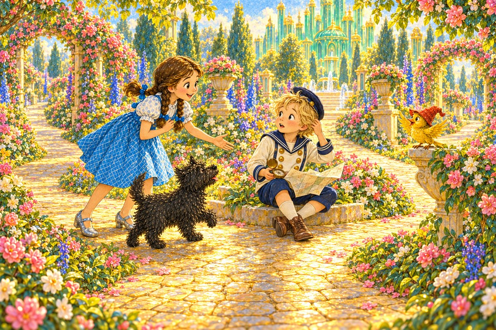
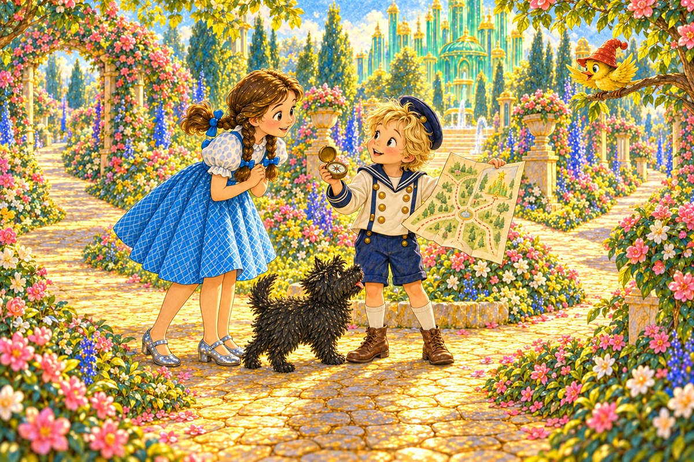
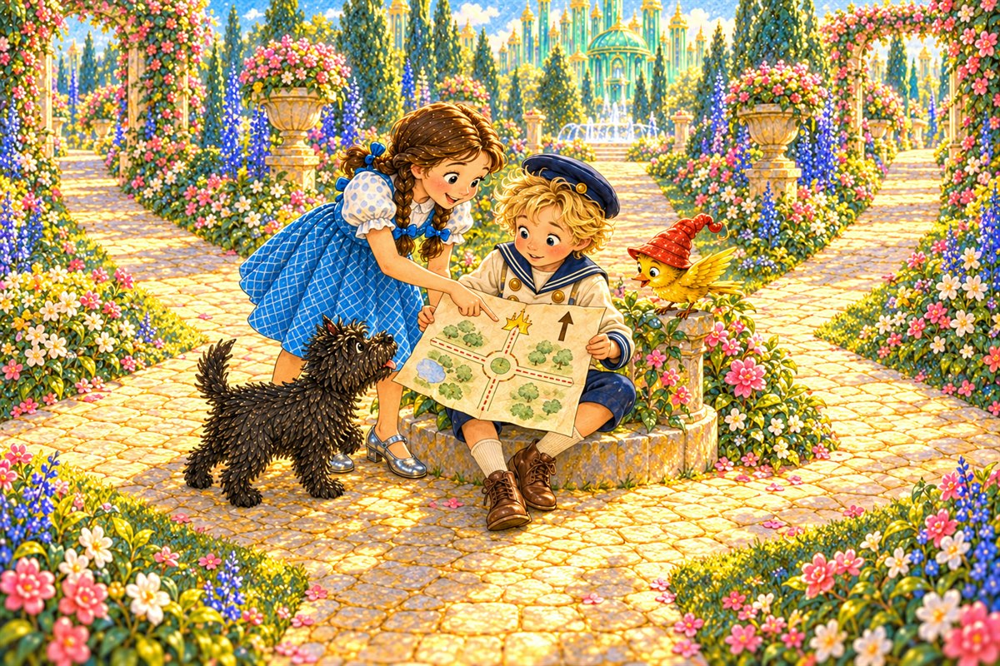
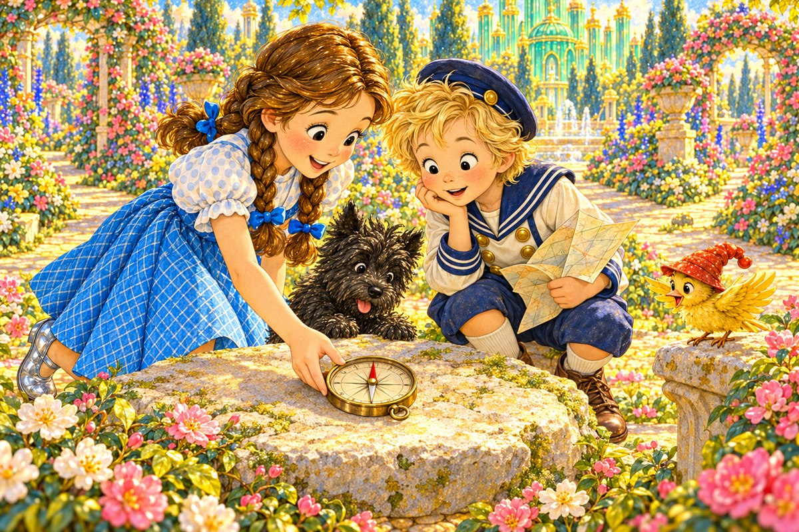
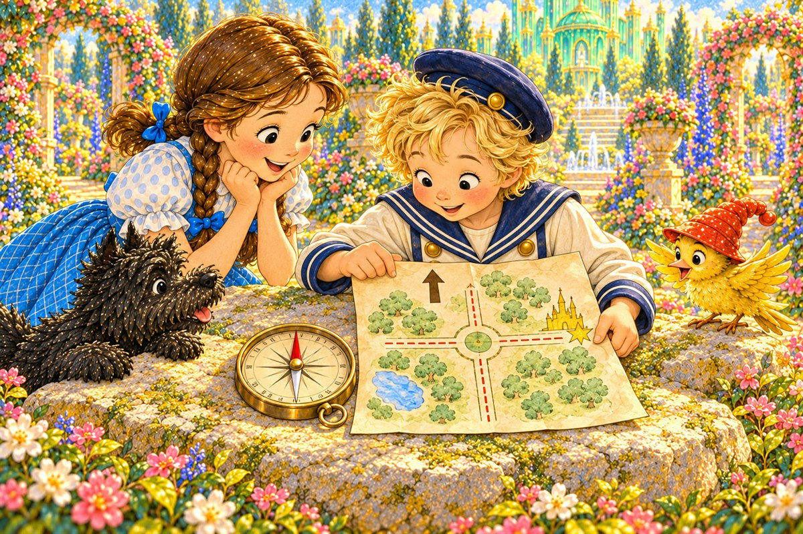
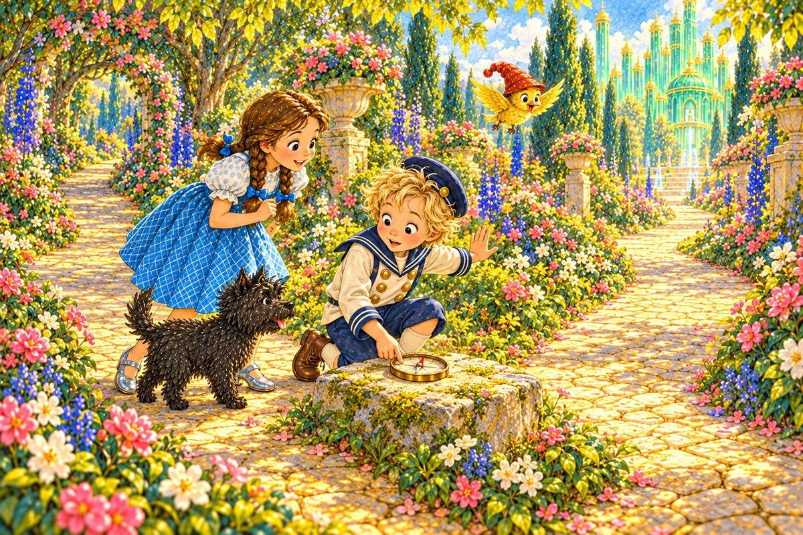
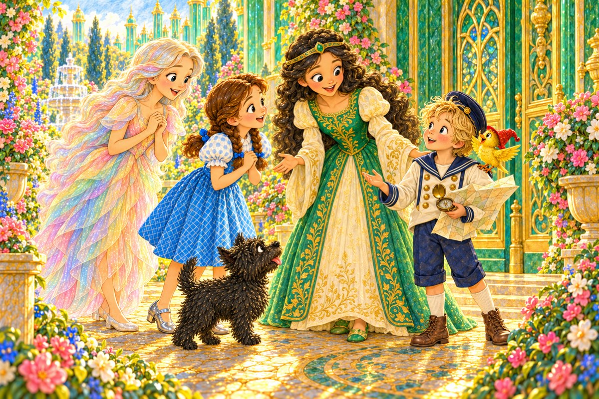

Pahina 1
Isang umaga, naglakad sina Dorothy at Toto sa hardin.
Kasama nila ang munting ibong dilaw.
Sa dulo ng daan, may isang bata sa tabi ng apat na landas.
Isang bagong tuklas sa Lupain ng Oz
Basahin ang tatlong bagong pahina bawat araw. Bago magpatuloy, balikan muna ang mga pahinang nabasa na.

Isang umaga, naglakad sina Dorothy at Toto sa hardin.
Kasama nila ang munting ibong dilaw.
Sa dulo ng daan, may isang bata sa tabi ng apat na landas.

“Ako si Button-Bright,” sabi ng bata.
“Hinahanap ko ang palasyo, pero naligaw ako.”
May hawak siyang munting mapa at kompas.
“Saang landas ka dumaan?” tanong ni Dorothy.
Umiling si Button-Bright.
“Hindi ko alam kung saan liliko. Pareho ang mga puno.”

Binuksan niya ang mapa.
May bituin para sa palasyo at palaso para sa hilaga.
Ngunit mali pa ang direksiyon ng mapa.

Inilagay ni Dorothy ang kompas nang patag sa bato.
Umiikot ang karayom.
Nang tumigil ito, ang pulang dulo ay nakaturo sa hilaga.

Iniikot ni Button-Bright ang mapa.
Itinapat niya ang palaso ng Hilaga sa pulang karayom.
“Tama na ngayon ang direksiyon ng mapa!”
“Nasaan ang palasyo?” tanong ni Dorothy.
Ipinakita ni Button-Bright ang bituin.
Nasa silangan iyon, sa kanan ng hilaga.
“Sa silangan ang daan!”
Naglakad muna si Button-Bright.
Lumiko sila sa landas sa silangan.
Sumunod sina Dorothy at Toto.
Lumipad ang ibon sa ibabaw.

Sa isa pang sangandaan, may dalawang landas.
Muntik silang lumiko sa maling daan.
“Gamitin natin muli ang kompas,” sabi ni Button-Bright.
Inilagay niya ang kompas nang patag.
Umikot at tumuro sa hilaga ang karayom.
Itinapat niya ang mapa.
“Ito pa rin ang daan sa palasyo.”
Sinundan nila ang landas hanggang lumitaw ang berdeng palasyo sa likod ng mga puno.
“Hindi na tayo umikot!” sabi ni Button-Bright.

Sinalubong sila nina Ozma at Polychrome.
Umawit ang ibon sa balikat ni Button-Bright.
“Ipinakita ng mapa ang lugar. Ipinakita ng kompas ang direksiyon,” paliwanag niya.
Pag-usapan natin